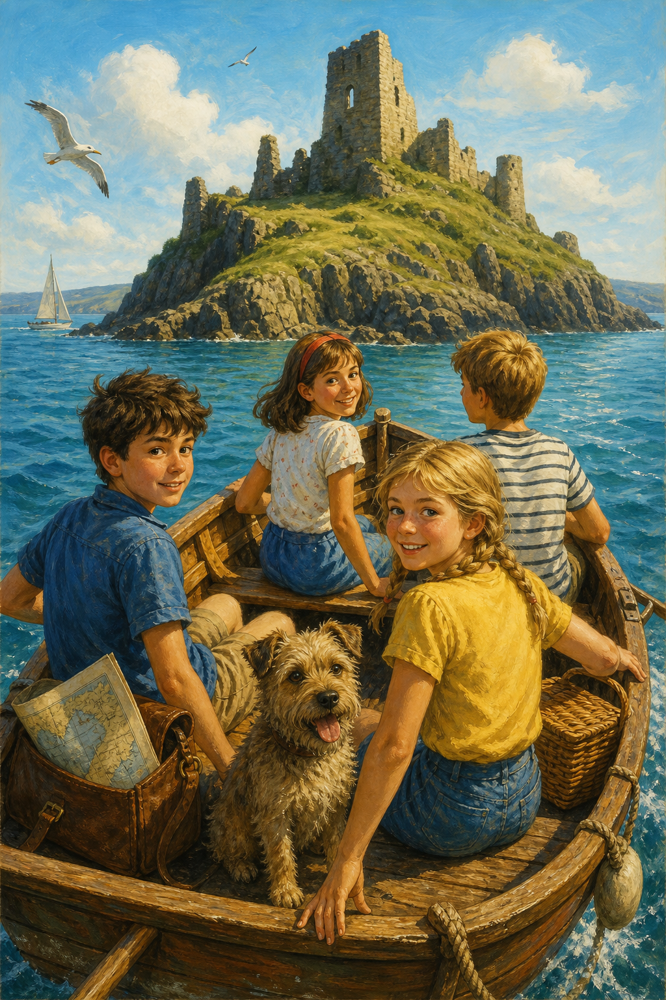
The Famous FiveFive Discover Treasure
Meet the Famous Five!
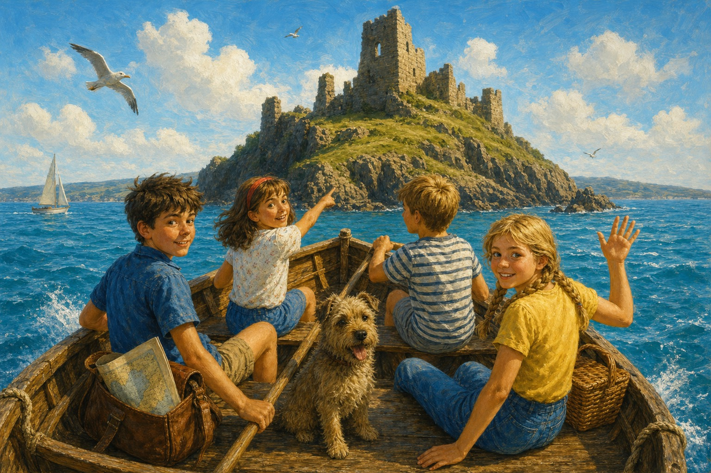
Off to Kirrin Island Again
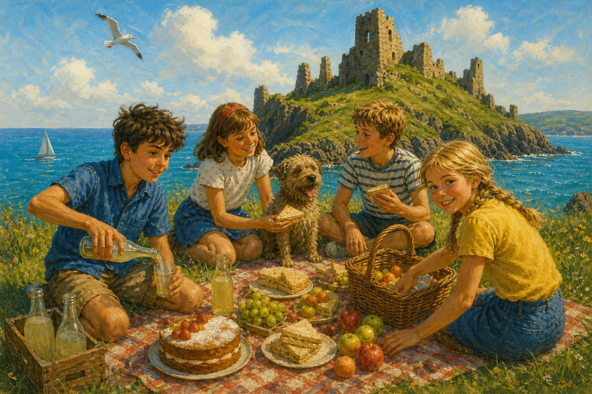
Julian, Dick and Anne were going to their cousin George’s house. Her real name was Georgina, but she always wanted to be a boy and insisted on being called George.
Once they met up with George, they decided to set off to Kirrin Island and take a huge picnic with them. It belonged to them all (mainly George). They set off on their boat and rowed across to Kirrin Island.
A Mystery
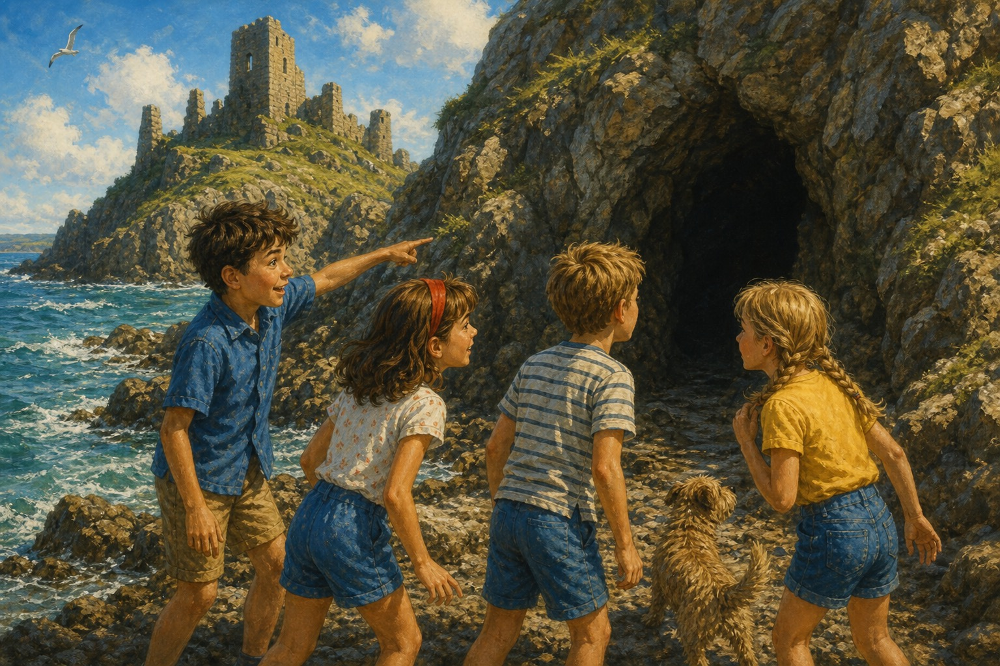
Once they reached the island, they had their yummy picnic of sandwiches, ginger beer and many more mouthwatering items. They decided to take a stroll along the sea.
Suddenly, something caught Julian’s eye. It was a cave! It definitely was not the cave they had lived in before, for it looked different. He asked George about it.
“George!” he called. “Have you seen this cave before?”
“No,” answered George. “Come on — let’s explore!”
“But Anne does not like adventure,” said Julian.
“Poor Anne,” giggled George.
An ‘X’ Mark
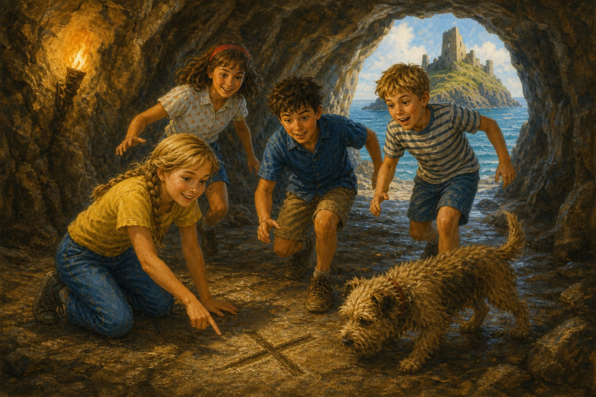
Anne wasn’t keen on another adventure at first, but could not help feeling excited. They began exploring the cave. Suddenly, Anne called, “Come here, I have found something!”
They all ran to her.
“An ‘X’ mark!” exclaimed Dick.
“What is an ‘X’ mark?” asked Anne.
“An ‘X’ mark means there is treasure somewhere deep under it,” explained Dick.
They all began to feel excited.
The Treasure Chest
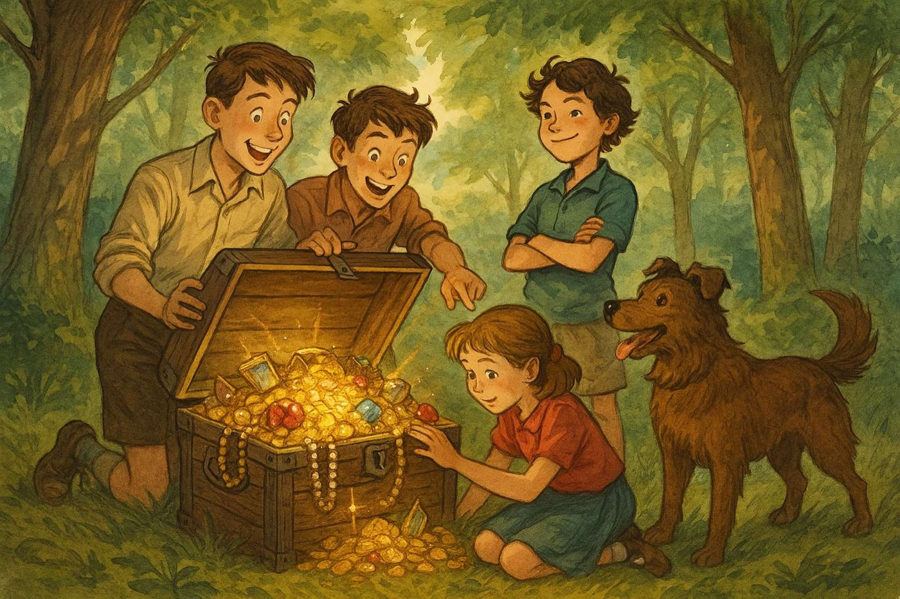
“Too bad we don’t have spades or shovels to dig this up,” said Dick.
“Who needs them when we have a rabbit-hole digger like Timmy and our hands?” answered George.
So they all began to dig. Suddenly, Anne felt something hard. It was the treasure!
“Julian! Dick! George!” she exclaimed. “I have found the treasure!”
They used all their might to carry the treasure chest to the boat. They sailed back home to tell Aunt Fanny. She admired the treasure chest but didn’t know how to open it. But the five did!
A Mysterious Letter
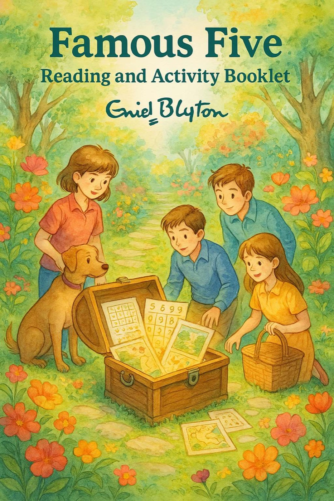
They ran up to the attic and threw it out of the window. Thank goodness Uncle Quentin was in America — for they were sure he would come running with fury after hearing the racket they had made.
They ran back down to see the treasure. There were loads of gold and silver coins and a note. George picked up the note and read it out loud. It said: “A chest from the old wreck.”
They all were surprised. The wreck once belonged to George’s great-grandfather before it bashed to pieces in a storm. The ship carried loads of treasure (read the first Famous Five book to find out more). This was one of the chests.
Aunt Fanny said they could keep the treasure. Even Timmy wore a gold coin which hung from his collar! They played and talked till it was finally time for bed.
Famous Five Activity Page
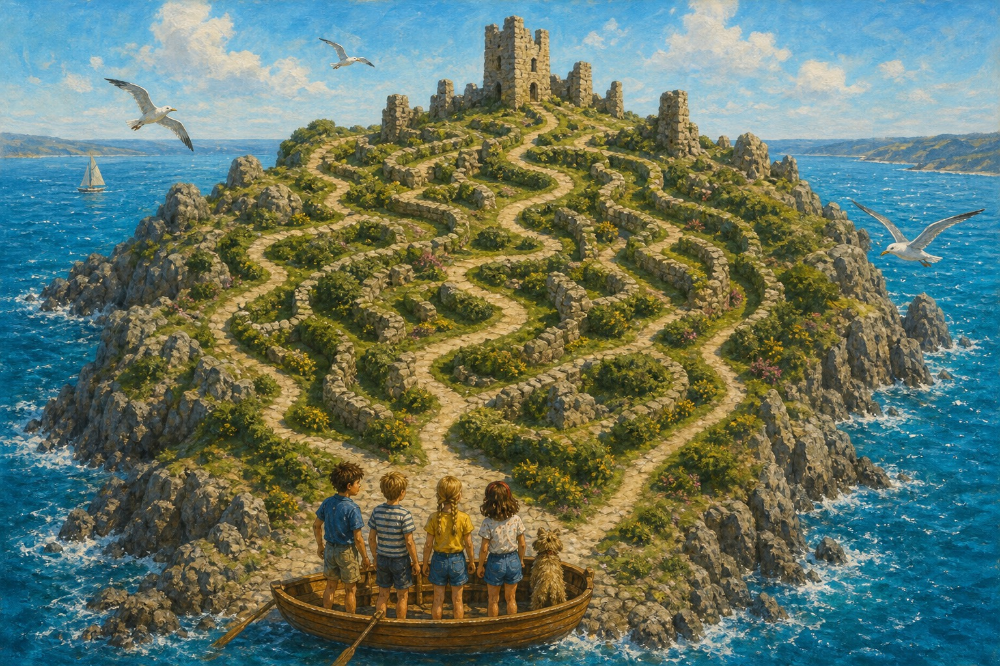
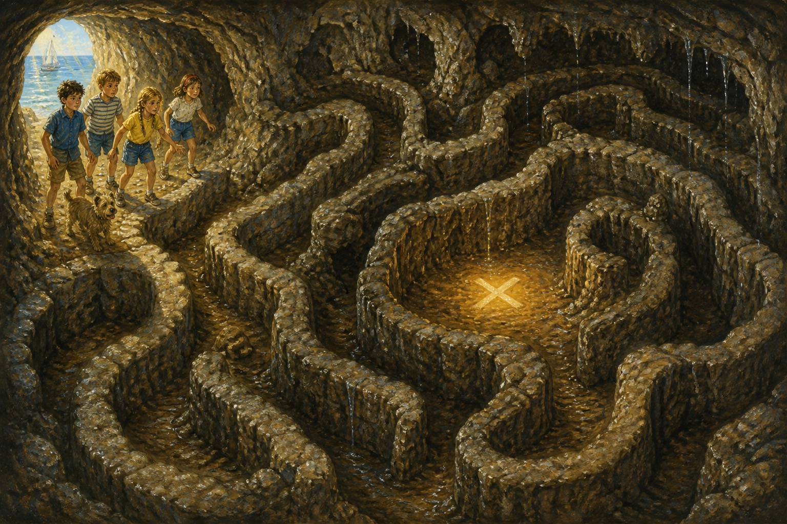
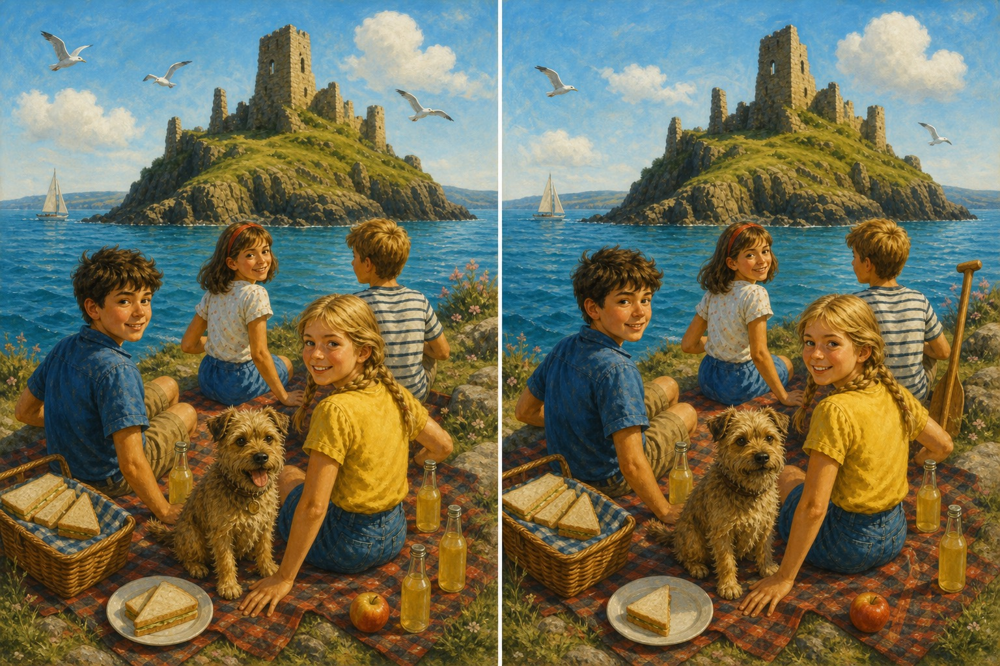
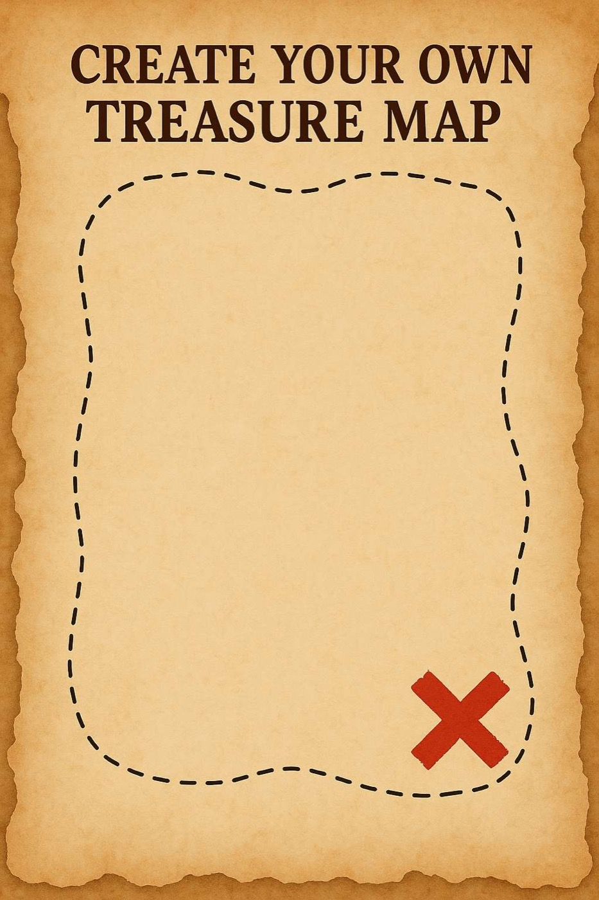
Create your own treasure map
What treasure did you find?
Who in the Famous Five are you most like?
The End
To the reader
Dear reader, thanks for reading our book. We hope you enjoy reading our attempt at writing a book for one of Enid Blyton’s most loved series, The Famous Five.
We also hope this book inspires young readers like us to use their imagination and come up with stories of their own. And remember — never stop following your dreams.
— Aanya and Anshika
(with a little help from the Five, of course!)